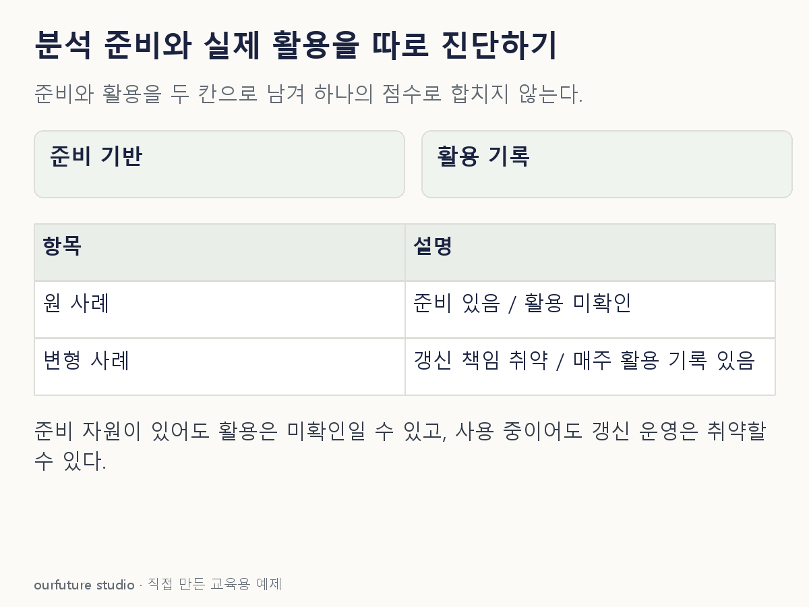

핵심 이론
준비 상태를 확인하는 질문은 사용할 수 있는 데이터, 인력, 도구와 운영 절차가 있는지에 관한 것이다. 활용을 확인하는 질문은 결과를 어느 업무에서, 누가, 얼마나 반복해서 사용하는지에 관한 것이다. 서버 구입은 준비의 증거가 될 수 있지만 활용의 직접 증거는 아니다.
이 원고의 두 축은 준비와 활용을 구분하기 위한 자체 진단 예시다. 정부 데이터 성숙도 자료도 시스템·기술·의사결정 등 여러 차원을 나누며 단일 점수로 모든 역량을 표현하지 않는다. 특정 기관의 검증된 척도나 공식 시험의 단계 명칭을 새로 만든 것은 아니다.
진단 뒤의 행동도 달라야 한다. 데이터 접근조차 어렵다면 확보 절차를 먼저 정비한다. 접근은 가능하지만 보고서가 사용되지 않는다면 실제 의사결정자, 제공 시점, 조치 절차를 확인한다. 보유 장비를 더 늘리는 것만으로 후자의 원인이 해결되는지는 별도로 검토해야 한다.
작은 예제로 확인하기
자체 점검표에서 “있음”의 근거를 구체적으로 적는다.
| 점검 | 조직 A |
|---|---|
| 담당자·접근 가능한 자료·분석 도구 | 있음 |
| 결과가 정기 발주회의에 사용된 기록 | 없음 |
A는 준비 항목을 갖추었지만 정기 활용은 아직 확인되지 않았다. 이 표만으로 조직 전체의 성숙도 등급을 확정하지 않는다. 기록이 없다는 말은 현재 자료에서 확인하지 못했다는 뜻이다. 비공식 회의에서 사용했을 가능성까지 없다고 단정하지 않는다. 담당자 인터뷰나 발주회의 기록으로 활용을 더 확인하고, 준비 쪽은 데이터 접근과 갱신 책임을 별도로 점검한다. 준비와 활용의 근거를 각각 적어야 다음 조치가 정해진다.
그림으로 확인하기

직접 고르기
담당자와 데이터·도구는 있다. 분석 보고서를 실제 회의에서 사용한 기록은 없다.
현재 근거로 가능한 판단은?
- 1. 활용 효과가 입증됐다
- 2. 분석 준비가 전혀 없다
- 3. 준비와 활용을 나누어 추가 확인한다
- 4. 장비가 있으므로 활용도 높다
정답과 오답의 이유 확인하기
정답 3번 — 준비와 활용을 나누어 추가 확인한다
준비 항목은 있으나 실제 활용의 근거가 없으므로 두 상태를 나누어 확인해야 한다.
- 1번은 사용 여부도 확인하지 못한 상태에서 효과를 확정한다.
- 2번은 제시된 준비 자원의 존재와 모순된다.
- 4번은 자원 보유를 실제 사용으로 바꾸어 해석한다.
조건 하나 바꾸어 풀기
보고서가 매주 발주회의에서 쓰이지만 데이터 갱신 담당자가 없어 자료가 자주 끊긴다면?
풀이: 활용 기록과 운영 준비의 취약점을 함께 기록한다.
한 축의 긍정적 증거가 다른 축의 문제를 지우지 않는다.
다시 떠올릴 단서
할 수 있는 기반과 실제로 쓰는 행동을 나눈다.
근거와 적용 조건
- UK Government: Data Maturity Assessment — 인쇄 3쪽 Introduction 및 주제 목록: 단일 점수 대신 다차원 진단. 확인일 2026-10-30.
상황·수치·보기·조건 변경은 자체 교육 예제다. 민간 복원 문항의 공식 정답이나 실제 성능·학습 효과를 뜻하지 않는다.
읽은 내용을 적용해 보기
검증된 기관 성숙도 점수나 공식 등급을 산출하지 않는 자체 진단이다.